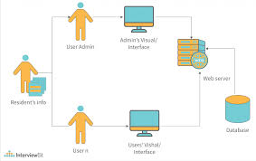

Introduction
System architecture is the conceptual model that defines the structure, behavior, and more views of a system. It provides a blueprint for both the system and the project developing it. Explore the different aspects of system architecture to get a comprehensive understanding of how systems work and interact.
Diagram illustrating system architecture
